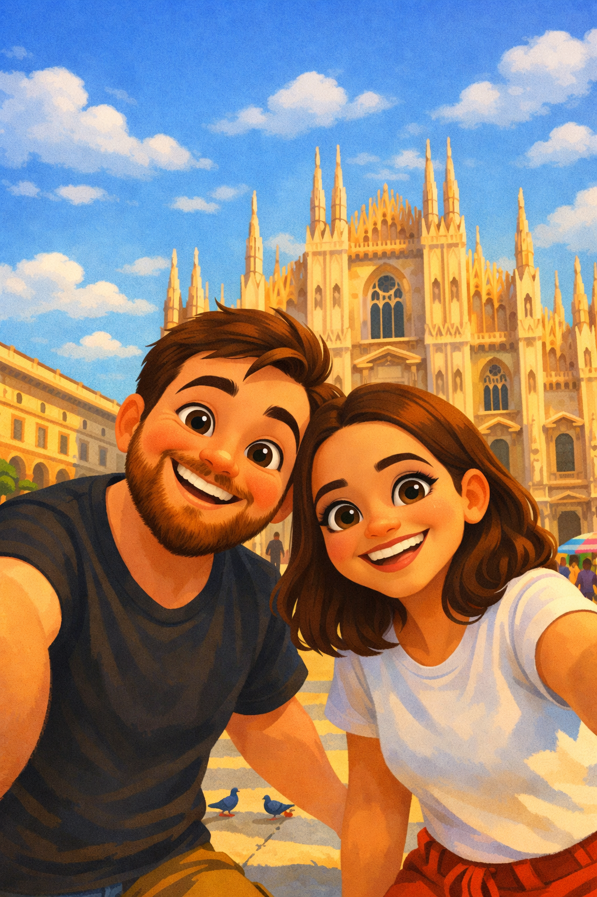

Oi, aqui é a Fê e o Lê!
Bem vindo ao Ussinhos te indicam!
Se você chegou até aqui, é porque está vindo nos visitar na Itália e isso já enche nosso coração de alegria.
Abrir nossa casa e compartilhar o nosso dia a dia com pessoas queridas é uma das partes mais especiais de viver em outro país.

Estamos realmente ansiosos para receber você, mostrar os lugares que fazem parte da nossa rotina, apresentar cantinhos que só quem mora aqui conhece e garantir que sua viagem seja leve, organizada e cheia de momentos inesquecíveis.
Este guia foi criado com carinho para acompanhar você desde o planejamento até cada passo pela Itália. Sinta se em casa, porque é exatamente assim que queremos que você se sinta quando estiver aqui conosco.
A cada passeio, descoberta e até perrengue, fomos juntando dicas que realmente ajudam quem vem visitar a cidade. Além disso, contamos com várias sugestões dos nossos colegas italianos, que sempre têm aquelas recomendações locais que não aparecem nos guias tradicionais.
A ideia é que esse guia seja vivo: vamos atualizando sempre com novas experiências, lugares que conhecemos e histórias que queremos compartilhar.
É o nosso jeito de receber vocês em Milão, com carinho e de forma bem próxima
E sim, a Fe me obrigou a programar esse site em meu tempo livre, então por favor, usem sem moderação!